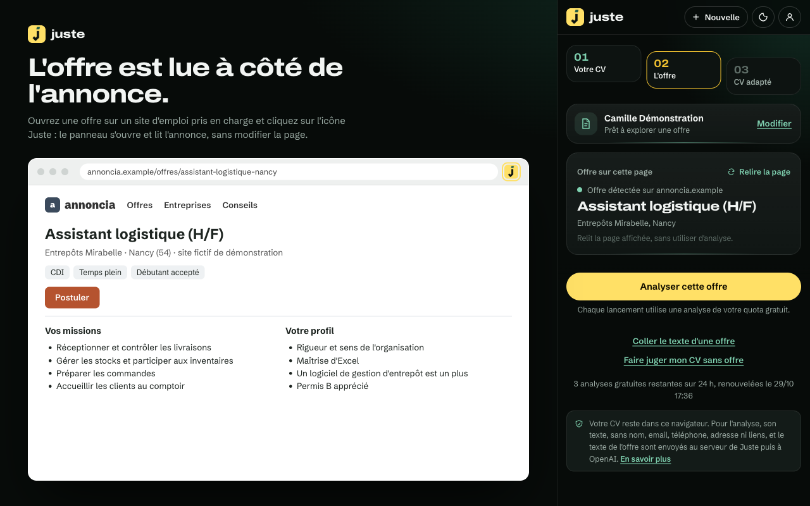
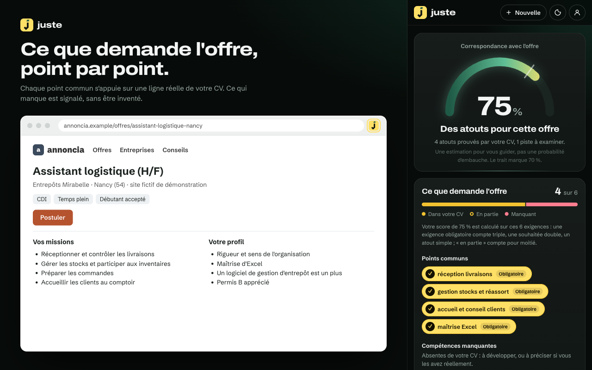
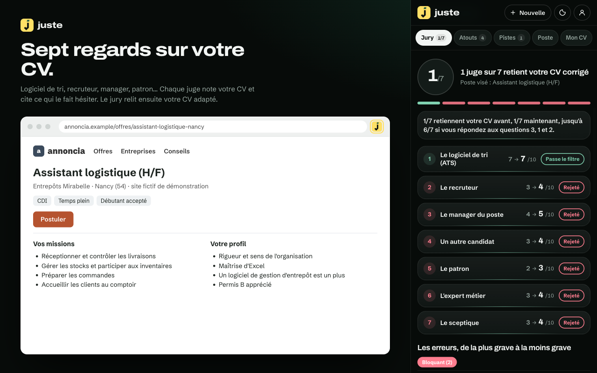
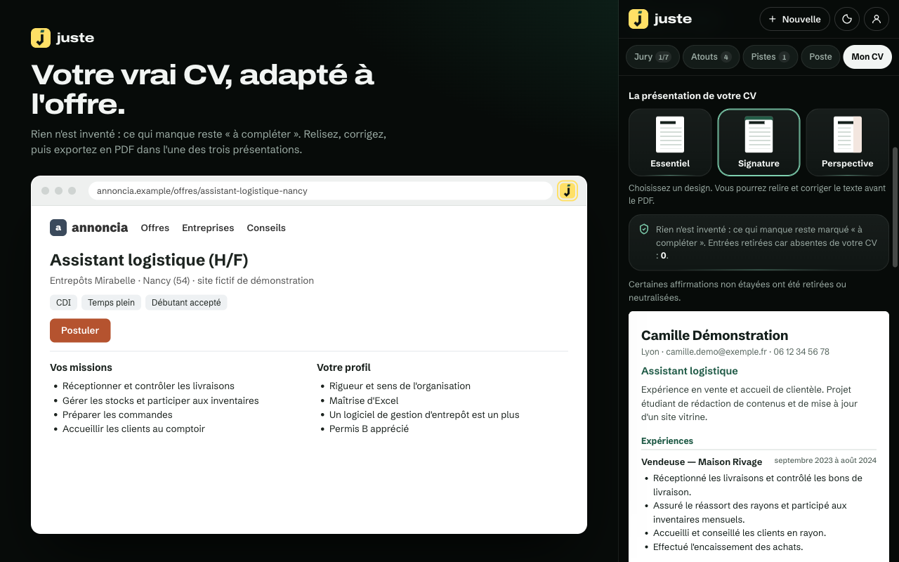
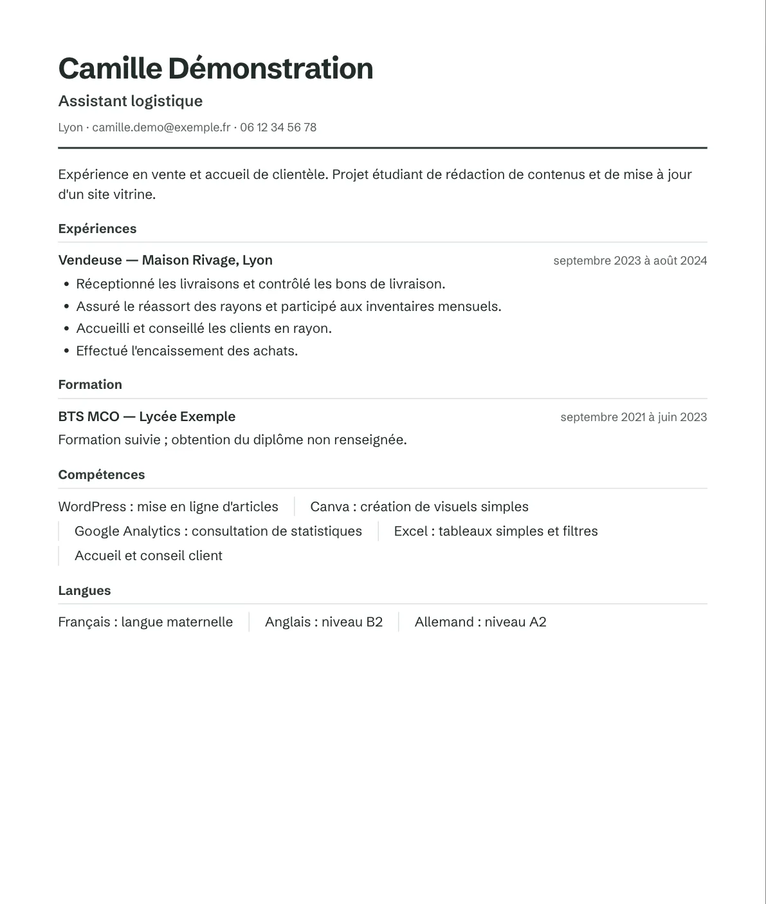
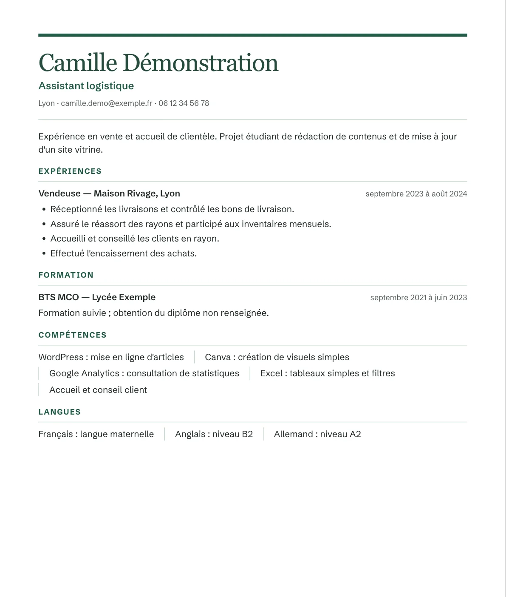
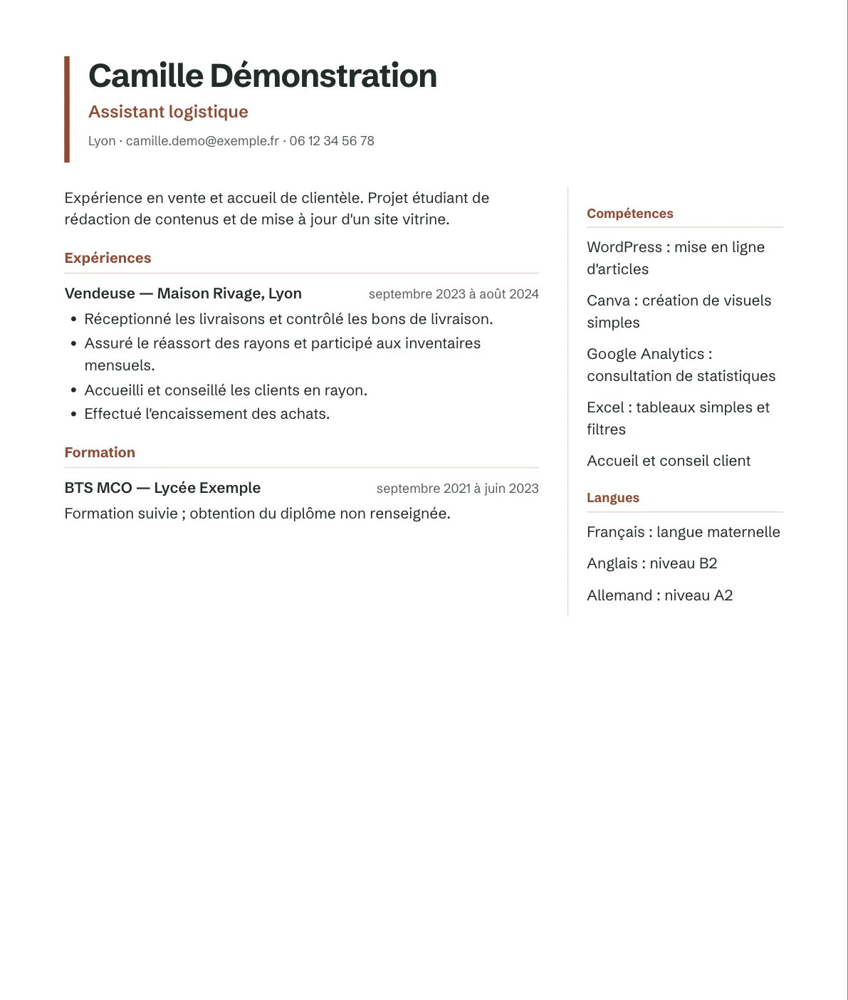

Juste · extension Chrome gratuite
Une offre qui vous parle.
Votre vrai parcours pour y répondre.
Extension Chrome gratuite
Votre vrai CV.Adapté à chaque offre.Sans rien inventer.
Juste lit l'annonce, mesure votre compatibilité et réécrit votre CV en citant chaque ligne qu'il utilise. Ce que vous n'avez pas fait n'apparaît jamais.
Sur téléphone, l'extension ne s'installe pas : ouvrez l'appli web, même analyse, même CV, rien à installer.
Offre lue : Chargé(e) d'affaires B2B · Lyon
Ce que disent les études
Les logiciels classent. Les humains décident.
On vous a dit que les robots jettent votre CV. La réalité est plus simple : un CV adapté et précis convainc mieux la personne qui le lit. À condition de ne rien inventer.
des recruteurs interrogés disent que leur logiciel ne rejette pas automatiquement les CV.
Enhancv, 25 recruteurs, 2025de taux d'entretien pour les candidatures avec un CV adapté à l'offre.
Huntr, 139 927 candidatures, T1 2026des CV réécrits par une IA sans garde-fous contiennent au moins une affirmation inventée.
Takano, arXiv 2608.26171, 2026Démo
Voyez ce que Juste garde, prouve et refuse d'inventer.
Choisissez un profil d'exemple et lancez l'analyse. SurvolezTouchez une ligne réécrite pour voir d'où elle vient dans le CV.
Le résultat de l'analyse s'affichera ici.
Démo avec des profils et des offres d'exemple, résultats précalculés. Dans l'extension, l'analyse porte sur votre CV et l'offre que vous consultez.
Fonctionnement
Trois étapes, moins d'une minute.
Ajoutez votre CV une fois
PDF, Word, texte ou image. Il reste enregistré dans votre navigateur, découpé en lignes numérotées.
Ouvrez une offre d'emploi
Cliquez sur l'icône Juste. Le panneau latéral lit l'annonce sur les principaux sites d'emploi, ou le texte que vous collez.
Relisez, ajustez, exportez
Vérifiez chaque modification, précisez ce qui est vrai, puis exportez en PDF parmi trois mises en page.
Visite guidée
Juste, à côté de l'offre que vous lisez.
Le panneau s'ouvre sur la page de l'annonce. Voici les quatre écrans que vous verrez, avec un CV et une offre de démonstration.




Captures de l'extension sur un site d'emploi fictif, avec un CV de démonstration. Aucune donnée réelle.
Ce que vous obtenez
Une analyse complète, pas un simple score.
Compatibilité décomposée
Une fourchette, exigence par exigence, avec ce qui compte le plus pour le poste. Jamais un « 94 % garanti ».
Atouts prouvés
Chaque point fort renvoie à la ligne exacte de votre CV qui le justifie.
Pistes concrètes
Ce qui manque, et ce que vous pouvez préciser si c'est vrai.
Profil recherché
Ce que le recruteur attend vraiment, résumé à partir de l'annonce.
L'avis du jury
Sept lecteurs simulés, du logiciel de tri au recruteur sceptique, notent votre CV et disent ce qui les ferait changer d'avis.
CV reformulé
Une version pour l'offre, modifiable, exportable en PDF dans trois mises en page.
La promesse
Fidèle à votre parcours, ligne par ligne.
Juste vérifie chaque phrase réécrite contre votre CV d'origine. Un chiffre, un outil, un diplôme ou un employeur absent est retiré et signalé.
Une IA générique
- « Maîtrise de HubSpot et Salesforce »Votre CV ne mentionne que Salesforce.
- « A dirigé une équipe commerciale »Vous avez participé, vous n'avez pas dirigé.
- « Anglais courant »Votre CV indique un niveau B2.
Juste
- Suivi des devis et relances sous SalesforceReformulé à partir de la ligne L7.
- Négociation et signature de contrats annuelsConservé tel quel, ligne L5.
- Anglais : niveau B2Gardé à l'identique. Si vous avez progressé, Juste vous invite à le préciser.
Le jury
Sept lecteurs, un verdict, une marche à suivre.
Juste simule le logiciel de tri, le recruteur, le manager du poste, un autre candidat, le patron, l'expert métier et le sceptique. Chacun note votre CV et dit ce qui le ferait changer d'avis. Extrait avec deux d'entre eux :
Export PDF
Trois présentations, le même texte vérifié.
Choisissez la mise en page, relisez chaque ligne, exportez. Le PDF reste du texte, lisible par les logiciels de tri comme par les recruteurs.



Confidentialité
Votre CV reste chez vous.
Stocké localement
Votre CV et vos réglages sont enregistrés dans votre navigateur, pas sur nos serveurs.
Envoyé seulement à l'analyse
Le texte du CV et de l'offre part vers OpenAI uniquement quand vous lancez une analyse.
Jamais revendu
Aucune revente, aucune publicité, aucun autre usage que l'adaptation de votre CV.
Effacé en un geste
Désinstaller l'extension supprime tout ce qu'elle a enregistré.
Prix
Payez le temps de votre recherche, pas plus.
Une recherche d'emploi a une fin. Nos passes aussi : ils s'arrêtent seuls.
Pass 30 jours
9,90 € TTC
- Analyses illimitées dans la limite d'un usage normal
- Trois mises en page PDF
- Pas de renouvellement automatique
Pass 7 jours
4,99 € TTC
- Jusqu'à 40 analyses
- Idéal pour une candidature urgente
- Pas de renouvellement automatique
Aucun renouvellement automatique. Vous payez une fois, le pass s'arrête à la date prévue.
Gratuit, sans compte
Des repères, pas des modèles à remplir.
Trois outils qui n'ont besoin ni de l'extension ni d'une inscription.
Repères par métier
94 métiers : les savoir-faire, savoirs et certifications que décrit le référentiel public ROME, et comment les écrire dans votre CV.
Voir les métiers →Guides
Logiciels de tri, mots-clés sans tricher, CACES et certifications, reconversion, lettre de motivation : cinq guides courts et sourcés.
Lire les guides →Suivi des candidatures
Un tableau de bord gratuit : offres, statuts, relances, export CSV. Tout reste dans votre navigateur.
Ouvrir le suivi →FAQ
Vos questions.
Est-ce que Juste peut mentir à ma place ?
Non. Chaque phrase réécrite doit s'appuyer sur une ligne de votre CV. Un outil, un chiffre, un diplôme ou une expérience absents sont retirés et signalés. Les reformulations plus fortes sont surlignées pour que vous les relisiez.
Mon CV est-il envoyé quelque part ?
Il est stocké dans votre navigateur. Quand vous lancez une analyse, le texte du CV et de l'offre est envoyé à OpenAI pour produire le résultat, puis il n'est utilisé à aucune autre fin. Le détail est dans notre politique de confidentialité.
Est-ce que ça marche sur téléphone ?
L'extension s'installe sur Chrome pour ordinateur. Sur téléphone, utilisez l'appli web justecv.fr/app : vous collez l'offre, l'analyse est la même et votre CV reste dans le navigateur.
Quelle différence avec ChatGPT ?
ChatGPT réécrit sans vérifier. Juste lit l'offre directement sur la page, décompose la compatibilité exigence par exigence, cite la ligne source de chaque atout et refuse d'ajouter ce que vous n'avez pas fait.
Puis-je être remboursé ?
Les passes ne se renouvellent pas. Pour toute demande de remboursement, écrivez-nous : nous répondons sous 48 heures ouvrées.
Sur quels sites l'offre est-elle détectée ?
Sur les principaux sites d'emploi français. Sur un autre site, cliquez sur l'icône pour lire la page ouverte, ou collez le texte de l'offre dans le panneau.
Votre prochaine candidature mérite votre vrai CV.
Installez Juste, ajoutez votre CV et obtenez votre première analyse en moins d'une minute.
Ajouter à Chrome, c'est gratuit